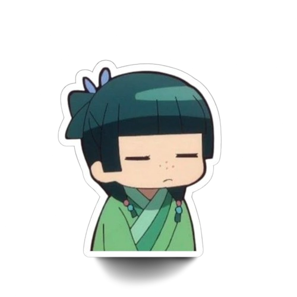

Draw ┐('～`;)┌
What an odd outcome...seems like your skills are on par with a fast machine but you need to do better. You need to defeat this computer for the sake of humanity. If you dont then it will be a shame to your legacy as a human. Dont feel bad, start again and this time remember what aizen sama taught you, the techniques he taught you to predict moves of your foe, use them even if its a computer infront of you, they will help you. Good luck this time (￣^￣)ゞ.
